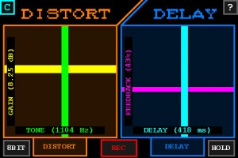
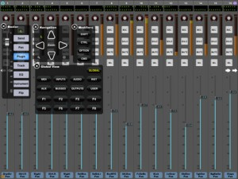
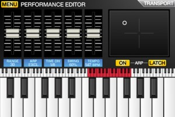
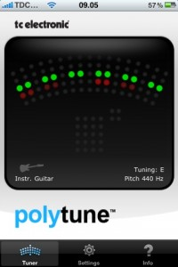
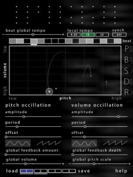
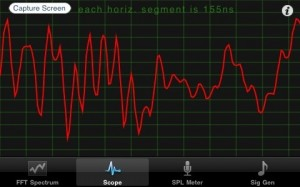
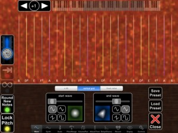
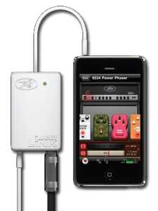
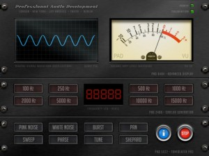
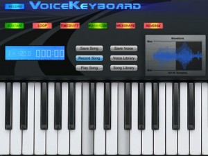

Distort+Delay is a real-time audio processing application that adds high-quality distortion and delay effects to any incoming audio signal. Both acoustic and electric instruments produce excellent results. Performances can be recorded for later playback or sharing with friends.
Audio samples are available at: http://distortdelay.signalsandstuff.com/
Effect descriptions:
This app produces a wide range of effects, ranging from minor enhancement to wild modulations. The tube-style distortion effect allows for a variety of tones, from subtle warmth to heavy crunch.
An “8-bit” lo-fi crusher is also included. When active, the 8-bit lo-fi replaces the tube distortion and allows the control of both gain and phase. The result of this bit-crushing is similar to everyone’s favorite 80s-style video game console.
The delay effect works much the same as any guitar pedal: short delay-time produces a reverb-like sound; medium settings produce a slap-back echo; and larger delays create “spacey” sound textures. The included “hold” button allows for creative audio experimentation. Delay adjustments are smooth and can be heard as the familiar pitching effect usually associated with analog tape echoes.
Compression is included to help normalize microphone input. It can be toggled off for direct-input cable connections.
This application supports iPhone microphones, Apple-headphones microphones, dock-connector microphones, or guitar-to-iPhone cables.
Effects details:
– Distortion effects: classic tube and 8-bit lo-fi with tone and gain controls.
– Delay effects: 743ms maximum delay with variable feedback, and hold effect.
– Compressor: automatically normalizes microphone volumes.Additional features:
– Capture your performances for future listening.
– E-mail your creations to your friends.
– Lossless AAC encoding is supported on iPhone 3GS+, iPod Touch 3rd Gen+, and iPad devices. Older devices will send WAV files.
Crank up the Distort+Delay
ProRemote offers high-priced DAW control
Ok, so this app has been around for quite a while, but it hasn’t appeared here before, so we thought we’d at least make mention of it for those that feel the need to spend this much on a DAW control app, even though there are plenty of cheaper alternatives available these days. There is an LE version that’s worth considering if you don’t need all the ‘pro’ features.
ProRemote is the World’s first 32 channel touch sensitive control surface that fits in the palm of your hand.
ProRemote allows you to control your Audio applications wirelessly using your existing Wifi network. Get realtime meter data and control your rig from across the room with flying faders or across the planet!
One binary runs on your iPhone, iPod Touch and iPad.
– Are you behind the drums and need to check your levels and press record?
– Do you frequently need to be in two places at the same time?
– Do you like sitting on the couch and playing guitar instead of being glued to the computer?
ProRemote is your solution. If you only need basic remote control of ProTools, Ableton Live, Apple Logic or Soundtrack Pro, see our other less expensive product ProRemote Light Edition (ProRmt LE) and ProTransport.
ProRemote on an iPad is like having four Mackie Control Universal Pro’s but better because it is wireless and much less expensive. You get almost $5000 of hardware for the price of ProRemote. And ProRemote also works on your iPhone and iPod touch.
Need an XY controller? Check out Pro XY. Use gravity to turn your knobs! Pro XY is included free in ProRemote.
Need professional MIDI pads for drum programming or other tasks? ProPads is your solution and is also included free with ProRemote.
All updates to ProRemote will be free.
This version “officially” supports:
– ProTools including a new skin for ProTools version 8
– Apple Logic
– Ableton Live 7
– Soundtrack ProUnofficially we support (no skin or custom fader tapers yet):
– Digital Performer
– MIO Console
– Cubase** You must download ProRemoteServer in order to use ProRemote. **
Please visit www.folabs.com/download.html to download the server.
The price of the remote includes unlimited free updates as well as free online support. Connect with us on Twitter: @proremote
ProRemote is Mac only- we are working on Windows support. A public beta for Windows XP is available for download.
Get a full rundown on the details of this and more controller apps from – http://www.folabs.com/
SynthStation surfaces at last
Announced earlier this year, Akai revealed the iPK25 keyboard, sporting an iPhone dock, plus the all singing and dancing SynthStation app that it was designed to be used with. The app has finally arrived, and although it is possible to use without the keyboard, we’re thinking you’d be better off picking up both!
Transform your iPhone into a music production studio. SynthStation transforms your iPhone, iPod touch or iPad into a portable music production studio for mobile music creation. SynthStation gives you three powerful synthesizers for creating and modifying sonic textures used for melodies, chords, and bass lines. Built around Akai Professional’s history in synthesis and drawing on the newest MINIAK synth, SynthStation sounds great and offers wide-ranging sonic flexibility with its virtual analog synthesis.
From the moment you start SynthStation, you’ll know your way around. It is jam-packed with tools to help you create music with the convenience of your touch screen and each section works the way you work. With SynthStation, you can create and save sequences and complete songs. The app contains three different three-oscillator synths and a range of drum kits you can sequence and mix right in the SynthStation. For creating melodic and accompaniment parts, the SynthStation contains an arpeggiator with preset patterns, built-in effects and filters, and an XY touch control interface for expressive control of key parameters.
PERFORM
Play with keys, XY and arpeggiator controls. This is perfect place to make magic happen because it gives you access to all the common controls you’ll need in a performance or creation setting.SYNTH
Complete synthesis controls from oscillators to LFOs, envelopes, and more. You can control a wide range of filters to dial in exactly the sound you need. Choose from Sine, Triangle, Square or Sawtooth on your VCO and start creating your own signature sounds from scratch. Filter Cutoff and Resonance are just two taps away.DRUMS
In addition to SynthStation’s three synthesizers, we’ve included drum kits and a visual representation of the most iconic beat making tool in the world – MPC pads. Just pick your kit and start tapping beats anywhere, anytime. Includes:Drum Kit – select the drum kit and play it with onscreen pads.
Drum Edit – tune, mix, and customize your drums.
SEQUENCER
Keyboard grid – see your keyboard sequencing and edit notes easily.Drum grid – build and modify drum tracks with a visible sequencer grid.
SONG/SEQUENCE
Select and save your Song/Sequence projects. You can recall your Songs and work on them later, and even export them for further editing in your desktop audio applications.CONTROL
XY – two axes of control for hands-on, real-time control. Just like a joystick, the XY controller can snap back to the zero point.Tempo – control tempo and even tap in the tempo you want.
MIXER
The Mixer in SynthStation includes touch-controlled faders for each of the three synthesizers and the drum section as well as FX send for each.Mixer – mix all the levels of the parts and effects. Just like a hardware mixer, there are faders, mutes, and effect routing.
Effects – select and control FX type and parameters.
SynthStation Studio enables you to create and produce music anywhere on your iPhone, iPod touch or iPad.
Get further details from – http://www.akaipro.com/synthstation
Guitarists rejoice…PolyTune is here
This original hardware stompbox has just been tuned into an iPhone app, and is still one of the only polyphonic tuners on the market. Gotta love their mantra to – Strum, Tune, Rock!…
Still tuning one string at a time? PolyTuneTM for iPhone is your short-cut to perfect and swift tuning, which will get you back to playing music faster than ever before! Just Strum. Tune. Rock!
PolyTune
PolyTuneTM is the world’s first polyphonic tuner, a game-changing total tuning turnaround that will have future guitarists wondering how we ever got by without it.It couldn’t be done – until we did it.
The magic lies in a never before seen approach to tuning aimed at speed, accuracy and ease of use. With PolyTuneTM, you simply strum all strings on your guitar or bass at once, and it will immediately tell you which strings need tuning! This cutting-edge tuning technology revolutionizes the way you tune and accomplishes what has been deemed ‘impossible’ until now: tuning all strings simultaneously! It really is as simple as strum – tune – rock, and this quantum leap forward allows you to get in tune fast, and back to doing what you love: playing.PolyTune for iPhone
The PolyTune iPhone app is a 1:1 port of the award-winning PolyTune pedal tuner, and PolyTune for iPhone delivers exactly the same features and tuning technology as the pedal version. However, you probably don’t want to mount your iPhone to your pedal board, so that’s what the PolyTune pedal is for. PolyTune for iPhone, on the other hand, is the fastest and easiest way to tune at home, in the band bus or backstage before the gig.Fever Pitch
You can set the reference pitch anywhere from 435Hz to 445Hz, so you can play with anyone, with any instrument and in any situation. And if you like to drop tunings, you can go from E-flat all the way down to B.Chromatic champion
PolyTuneTM is also a chromatic tuner with an amazing 0.5 cent accuracy, and it has two chromatic tuning modes: Needle and Stream. Needle Mode is the classic tuner view, and if you want a little more real-time information, the Stream Mode visualizes even the slightest pitch as a rotating motion.MonoPoly
Whether you prefer the polyphonic or chromatic approach, the unique MonoPoly technology recognizes whether you play one or more strings and seamlessly switches to the right tuning mode.We can’t make tuning fun…
…but we sure can make it a whole lot easier! We want to help innovate the life of guitarists as we are passionate guitarists ourselves, working every single day to make all our lives easier and more rocking. In short, PolyTuneTM is here to give tuning a much needed kick in the A440!
A full rundown on the features are available here – http://www.tcelectronic.com/polytune-iphone-app.asp
Nice noise maker
Feel like fiddling freely with noise and tones? This is available for iPhone and now for iPad.
An experiment in touch based controls of pitch and volume for multiple tones resulted in an app that’s fun to interact with, and produces a wide range of different sounds and textures.
Drag some dots into the work area and carefully position for controllable out of phasing, or shake the device to randomize the pattern.
Use touch to position up to 40 tones in the work space
Beats to set up rhythms, with individual tempo multipliers
Slider controls for motion setup
Pause so you can grab the fast moving ones
Save/load your patterns
Auto save/load of active composition when exiting/starting app
Shake device to randomize all active tones
Individual tone motion and beat randomisation button
Apply feedback to the pattern to put the ‘noise’ in noise machine
Help screen
Get further details and updates from – http://www.jellybiscuits.com/noisemachine.html
Sweet suite of audio tools
Audio Kit is a collection of four applications which are essential for those working in audio and sound. A real time Spectrum Analyser, a Scope to display waveforms, an SPL (sound pressure level) Meter, and a sine wave Signal Generator.
-View a real time spectrum of audio with the Spectrum Analyser
-View the actual waveform of the audio signal with the Scope
-An SPL Meter provides measurement of sound levels using an A-weighting
-The Signal Generator provides a sine wave output up to 20,000Hz in 1 Hz steps.FFT (Fast Fourier Transform) is used to calculate the frequencies in the Spectrum Analyser and these are displayed in real time. The frequency is displayed in either logarithmic or linear scale.
The display of the Scope can be adjusted easily using pinch gestures in both horizontal and vertical directions. Zero crossing detection of the waveform provides a smooth display and can be set to either positive or negative direction zero crossing.
There is a screen capture facility in both the Spectrum Analyser and the Scope allowing you to save the spectra and waveforms for future reference.
SPL Meter continuously displays the sound pressure level, and has minimum and maximum displays also.
The output of the Signal Generator can be viewed on the other parts of the App.
Frequency is selected using picker wheels and allows for accurate control of frequency to within 1Hz. Volume is continuously adjustable, and there is a switch to quickly turn off volume and quickly reset it to the previously set volume.All parts of the App have direct access to a help document.
Find out more from the developer’s site – http://store.sinusoid.com/software/iphone-apps/audio-kit.html
Wizdom Music dream up another hot app
It’s fantastic to see Jordan’s passion for creative music apps continuing with this follow up to his first impressive effort. We’re looking forward to having a play with this shortly.
MorphWiz is the second app to bear the Jordan Rudess name. MorphWiz, partly inspired by the success of the Haken Continuum Fingerboard, a radically innovative and revolutionary MIDI instrument that Jordan uses on stage and in the studio with Dream Theater.
Like the Continuum, Jordan Rudess’ MorphWiz is a vertical grid based musical instrument that allows a whole new level of expressive control!If you are a beginner, you’ll love experimenting with all of the presets, but if you’re a professional musician, you will soon be blown away by one of the coolest methods of controlling sound that you’ve ever laid hands on.
Jordan states, “Our goal was to create an instrument that would allow the seamless morphing of the audio and visual domain while delivering a seamless musical experience. I believe the iPhone/iPad multitouch platform opens up a whole new world of creation of electronic musical instruments and we’re proud MorphWiz is our first major offering. My experience and involvement with the Haken Continuum and extraordinary Bebot app brought to life an advanced pitch control system that is still uncharted territory for many in today’s music instrument world. This is the heart of MorphWiz.”
Over 70 Jordan Rudess-created patches
FEATURES:
• Currently available on Ipad only
• Assign audio waveforms as visual shapes to the grid and morph between them with your fingers on the grid or the accelerometer
• Advanced pitch control allows the player to round the pitch of the initial attack of any note. It also recognizes when your finger stops after a slide, and rounds your notes to the nearest diatonic pitch
• Rounding pitch on initial attack
• Rounding pitch after a slide
• Independent pitch and synthesis control for up to 10 simultaneous notes
• Finger Vibrato Effect (FVE) where you can achieve vibrato even when lock pitch is selected and the pitch is snapping to the grid!
• Velocity Controlled Animation (VCA) in sync with your musical performance
• Adjustable location for performance controls
• Editing never interrupts the sound and audio output.
• Trippy full-color, animated particles, fire, and ring effects visually radiate under your fingertips and contain real time pitch information
• Choose from a wide variety of scales and chords to assign to the playing surface with easy customization
• Choose to display names of notes or intervals to help guide you
• Consistent color display for pitch lines which indicate each step if the scale
• Playing surface is adjustable between 1 and 6 octaves.
• Performance controls include octave shift, pitch lock on/off, record to delay buffer on/off, infinity delay setting on/off, and multi-function slider
• Unison detuning effect with separate pan control for that classic analog thickness
• Refined and intuitive FM (Frequency Modulation) synthesis can be assigned to the vertical grid or accelerometer
• Wave Sync Synthesis (WSS) can also be assigned to the vertical grid or accelerometer
• Volume separately assignable to vertical grid.
• Adjustable note attack and release time
• Infinite-Track Loop (ITL) recorder features user-selectable measures and beats.
• Record Undo and Redo
• Reverse play
• FX include digital delay, stereo chorus, and tremolo, the latter of which is assignable to the X-Axis
Get all the details from here – http://www.morphwiz.com/
Peavey enters the recording space…
While not exclusively for use with guitars, it appears most of the audio recording hardware coming out for the iPhone and iPad are aimed at guitarists. The latest to arrive is AmpKit LiNK from Peavey, which looks set to do the job nicely.
Peavey Electronics and leading iPhone applications developer Agile Partners have joined forces to launch AmpKit, an unparalleled guitar amp and effects iPhone application, and AmpKit LiNK, a high fidelity audio interface for the iPhone, iPod touch* and iPad. Together, AmpKit and AmpKit LiNK provide musicians of all skill levels with a powerful and convenient way to jam with high quality tones anytime and anywhere.
The AmpKit LiNK audio interface raises the audio fidelity bar for the iPhone platform. AmpKit LiNK is an iPhone, iPod touch* and iPad interface for electric guitar, bass, or any line level source, with an output that can be connected to headphones, powered speakers or a PA.
AmpKit LiNK’s revolutionary CrossTalk Eliminator solves the feedback problem inherent in existing unpowered iPhone interfaces. Unpowered guitar interfaces suffer from feedback when using headphones. AmpKit LiNK is a powered device with circuitry that virtually eliminates feedback.
The interface can be used with any recording, processing, or tuning application, including Agile Partners’ GuitarToolkit, one of the highest-rated applications in the iTunes App Store.
The AmpKit LiNK guitar interface is available for pre-order from the Peavey online store as well as from dealers, distributors and retail stores worldwide for $39.99.
Head to the official site – http://peavey.com/ampkitlink/
The perfect sound checking tool
This could be the most important app you ever buy for use in your home studio or live mixing scenarios. It’s nothing more than a bunch of reference tones and noises, but they could be what saves your mix, by letting you know how your speakers sound.
The Ultimate Professional Audio Test Suite comes to the iPad.
Our team of engineers brings you the finest digital toolkit for all your audio testing needs.
From Professional studios to home studios to audiophiles to iPod enthusiasts… this is the one you have been waiting for!PAD 1000 includes a full range of Lab Quality tones including :
100Hz
250Hz
500Hz
1kHz
2kHz
5kHz
10kHz
15kHzPink Noise
White Noise
Burst
Pan
Sweep
Phase
Tuning – A440
ShepardImpress your associates with how superbly you’ve improved the quality of your audio environment.
These tones are indispensable for anyone involved in the music making process.
You cannot afford to be without PAD 1000.
Sample it VoiceKeyboard HD
Whether it’s just for a laugh or more serious uses, this ‘sample and playback anything’ app is remarkably easy to use and the results can be pretty impressive. This HD version gives much better access to the various settings and keyboard.
Record any sound, and play it back on the keyboard as an instrument! Record anything and turn it into something musical and creative. For example, record one note from a guitar, and instantly you have a guitar piano. Replace your other Grand Piano, Cat Piano, Dog Piano, Bird Piano or Majestic Bug Piano (etc..) from the sounds you record.
VoiceKeyboard is a powerful, easy to use sampler. Import and export from your computer, manipulate the waveform with the touch screen, timeshift to sync all of the notes when playing chords… Record your performances, and play them back with the most dynamic and versatile piano on the iPad.
NEW FEATURES
• Waveform Selection
Quickly drag your finger over the waveform to select the exact part of the recording to use on the keyboard.• Reverse Sample Mode
Play samples in reverse, and use the waveform to customize the sample further.• Web Sharing
Upload and download recorded samples to and from VoiceKeyboard with your home computer• 30-Note Polyphony
Play with all 10 fingers, make your own custom high-quality uncompressed (48.0k 16 bit) samples.• Sound Modes:
The Timeshifting (or Timestretching) option allows simultaneously played notes to be in sync and the same duration, making the samples sound harmonious and musical when played together.• Automatic Sample Trimming
This version automatically recognizes and removes the silence or “dead air” at the beginning and end of the recorded sample, making the keyboard very responsive.• Audio Normalization
Normalization increases the loudness of your recordings to a maximum level without introducing any new distortion.• Sustain and Looping.
Control how the recorded samples are looped and sustained, when played on the keyboard.• Fully Animated Keyboard with multitouch glissando (finger sliding).
• Save, Load, Preview, and Delete Samples.
• Save and load Song Performances with Tempo adjustment.


{kind=link}
{kind=link}
{kind=link}
{kind=link}
{kind=link}
{kind=link}
{kind=link}
{kind=link}
{kind=link}
{kind=link}